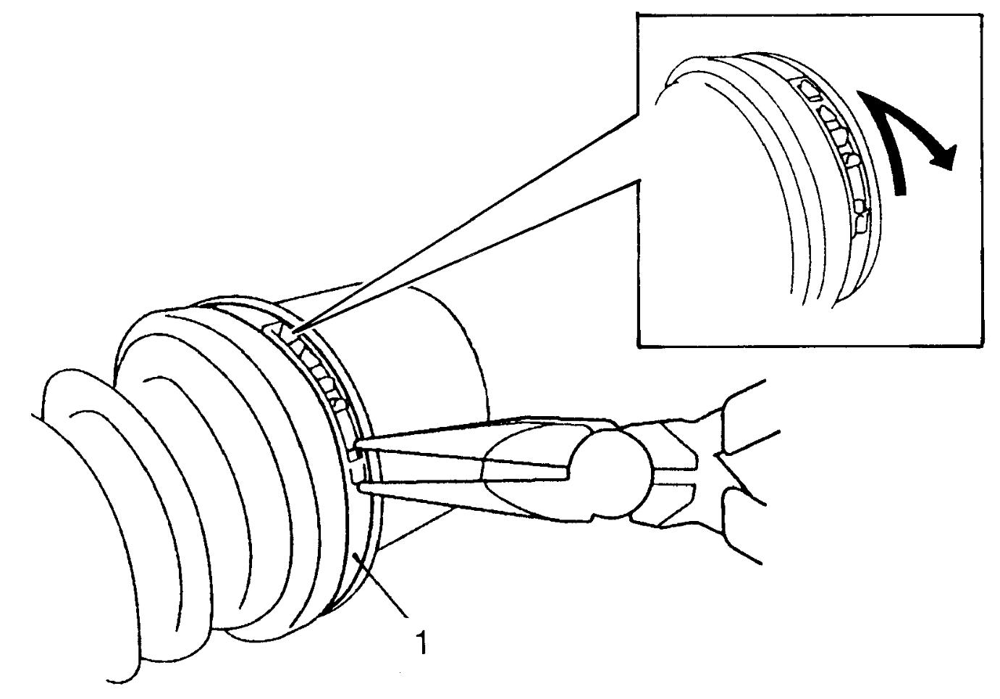
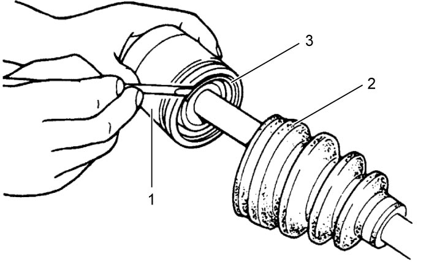
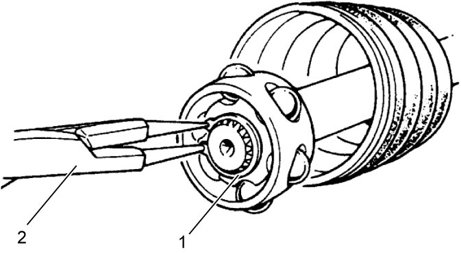
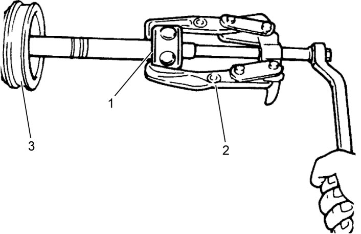
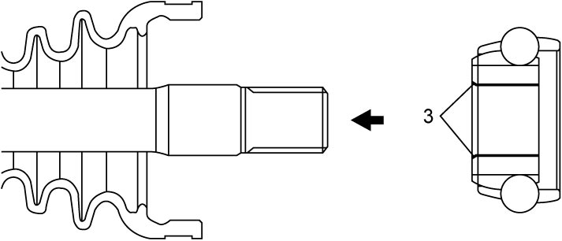
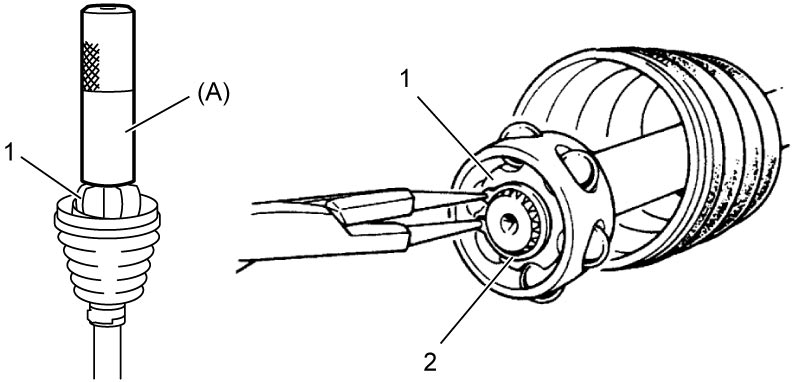
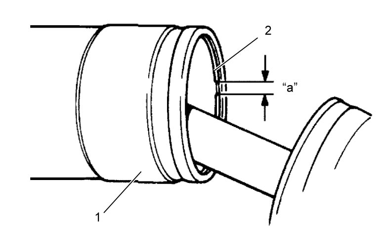
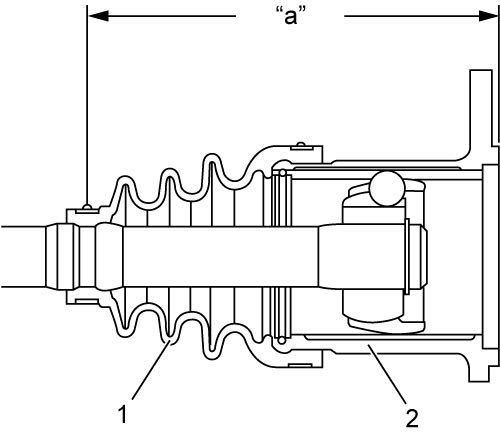
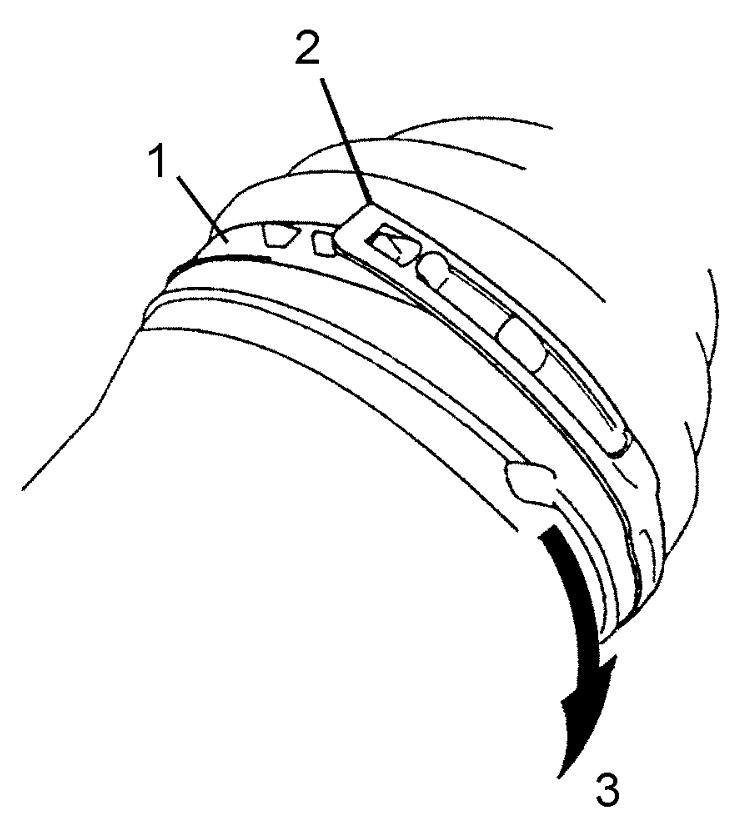
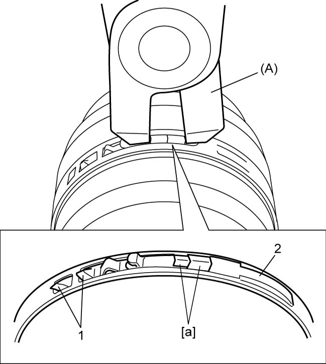

3A
| Rear Drive Shaft Assembly Disassembly and Reassembly |
Disassembly
Refer to Front Drive Shaft Assembly Disassembly and Reassembly:Front, noting the following points different from the ones described for front drive shaft:
•Remove boot big band (1) using nose pliers to disengage hook.
 •For differential side, remove joint as follows:
•For differential side, remove joint as follows:

 "Expand image")
a.Slide boot (2) toward the center of shaft, remove snap ring (3) from differential side joint, and then take shaft out of differential side joint housing.
b.Wipe off grease from shaft, and using snap ring pliers (2), take off circlip (1).
c.Remove cage (1) using bearing puller (2), and pull out boot (3) from shaft.

 "Expand image")

 "Expand image")

 "Expand image")
Reassembly
Refer to Front Drive Shaft Assembly Disassembly and Reassembly:Front, noting the following points different from the ones described for front drive shaft:
•Apply grease to wheel side joint.
•For differential side, install joint as follows:
Grease specification for rear drive shaft wheel side joint
40 – 60 g (1.41 – 2.11 oz)
a.Install differential side boot on shaft.
b.Install cage (1) on shaft using special tool and hammer, directing its chamfered spline (3) toward wheel side, and then install new circlip (2) using snap ring pliers (4).
c.Apply grease from the service kit to entire surface of cage and differential side joint housing.
d.Insert cage into joint housing (1), and fit snap ring (2) into groove of joint housing.
e.Fit boot (1) to grooves of shaft and differential side joint housing (2).
f.Insert flat-bladed screwdriver or the like into boot (1) and allow air to enter boot so that air pressure in boot becomes the same as atmospheric pressure at boot fixing position.
b.Install cage (1) on shaft using special tool and hammer, directing its chamfered spline (3) toward wheel side, and then install new circlip (2) using snap ring pliers (4).

 "Expand image")

 "Expand image")
Grease specification for rear drive shaft differential side joint
80 – 100 g (2.83 – 3.52 oz)
NOTE:
Position opening “a” of snap ring so that it will not be lined up with a ball.

 "Expand image")
f.Insert flat-bladed screwdriver or the like into boot (1) and allow air to enter boot so that air pressure in boot becomes the same as atmospheric pressure at boot fixing position.
Drive shaft boot fixing position (distance between differential side joint end and boot small band center)
“a”: 142.5 – 152.5 mm (5.611 – 6.003 in.)

 "Expand image")
•Install new bands to wheel side and differential side boots as follows.
a.Place boot band (1) onto boot putting band outer end (2) against forward rotation (3) as shown in figure.
b.For boot small band of differential side and boot big band, fasten boot band (2) by drawing hooks [a] with special tool and engage hooks (1) as shown in figure.
For boot small band of wheel side, refer to Front Drive Shaft Assembly Disassembly and Reassembly:Front.
NOTICE:
Squeezing or distorting the boot will reduce its durability.
Do not force air out of the boot by squeezing or distorting it when fastening it with boot bands.

 "Expand image")

 "Expand image")